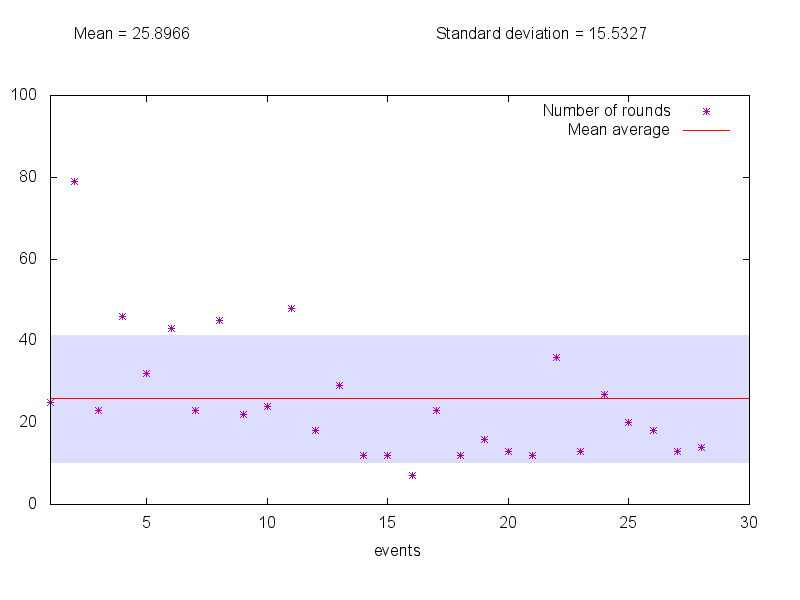
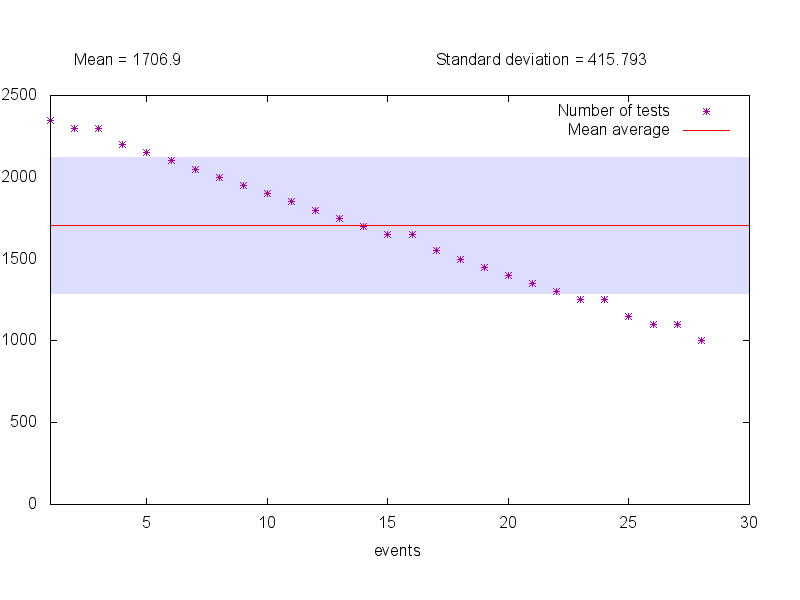

Trabalho Prático 1 de Sistemas Distribuídos
Por Renan Greca
Trabalho realizado para a disciplina de Sistemas Distribuídos (CI721), PPGINF/UFPR, Prof. Elias P. Duarte Jr.Abril de 2016
Desenvolvimento
O objetivo do projeto era desenvolver um algoritmo similar ao Adaptive DSD, mas escolhendo nodos aleatórios para serem testados.
Portanto, usei como base a implementação do Adaptive DSD que foi usada em sala de aula.
O primeiro passo foi alterar o trecho do código onde são realizados os testes, trocando a escolha linear de nodos (j = (j+1) % N;) por um laço que busca um nodo aleatório que não foi ainda conferido na mesma rodada.
do {
j = rand_int(0,N-1);
} while ((temp_state[j] == FAULT_FREE || temp_state[j] == FAULTY)
&& num_checked < N);
Para lidar com os eventos aleatórios necessários para o modo síntese, foi necessário adicionar um bloco de código que é executado entre cada rodada de testes. Num sistema distribuído de verdade, isso não seria possível — mas também não seria necessário pedir falhas de nodos manualmente como é feito neste trabalho. Este código, portanto, cumpre papel de fatores externos ao sistema; é responsável por solicitar eventos de falha de nodos e gerenciar as variáveis que serão posteriormente utilizadas para gerar estatísticas acerca da execução. O bloco executa apenas quando o sistema está estável (todos os nodos sem-falha têm as mesmas informações de diagnóstico). Para garantir que o sistema está estável antes de solicitar outro evento, bem como para imprimir os vetores de estado corretamente, cada nodo, mesmo que falho, sabe corretamente seu próprio estado.
Para concluir, as informações armazenadas durante a execução dos testes são utilizadas para calcular a média e o desvio padrão das latências após cada evento. Ou seja, após cada solicitação de evento, é contado o número de rodadas de testes que foram necessárias para que o sistema se tornasse estável novamente.
Como usar
Correct usage: diag [-s] [-v] [-a] [number-of-nodes]
number-of-nodes: number of nodes for simulated system (must be an integer greater than 1)
Options:
-s : Synthesis mode (simulates up to 30 events; prints and plots the statistics)
-v : Verbose (outputs a detailed log)
-a : Adaptive DSD (removes randomized node selection)
No modo síntese (-s), são simulados 30 eventos (ou 2N/3 se N ≤ 35, pois o algoritmo se torna instável quando a maioria dos nodos estão falhos) aleatórios e suas estatísticas são
apresentadas tanto em texto pela saída padrão quanto de forma visual no arquivo plot.png.
A opção -v faz com que o programa imprima o log completo durante a execução.
Sem ela, apenas informações básicas são impressas no início e no final da execução:
o vetor de estados de cada nodo e as estatísticas (média, número de testes, etc.).
Com ela, o log indica cada teste, cada evento e imprime os vetores de estado entre cada rodada de testes.
A opção -a desabilita a escolha aleatória de nodos para que o programa se torne uma implementação
do Adaptive DSD comum.
Isso foi usado para comparar os resultados do programa, que serão apresentados a seguir.
Conclusões
Para poder visualizar os resultados do programa, foi gerado o seguinte gráfico utilizando o modo síntese numa execução com 50 nodos. O eixo X representa os eventos discretos que ocorreram durante a execução, enquanto o eixo Y mostra quantas rodadas de testes foram necessárias para cada um ser diagnosticado. Também são mostrados a média e o desvio padrão das latências.
Como era de se esperar, a escolha aleatória de nodos faz com que a latência de diagnóstico seja inconsistente para cada evento; enquanto alguns eventos foram diagnosticado em pouco tempo, um deles levou quase quatro vezes mais do que a média.

Em comparação, o Adaptive DSD tradicional executado sob as mesmas condições tem uma queda quase linear na latência no decorrer da simulação. Como também era esperado, o desvio padrão desse algoritmo é muito menor.
Ao se analisar o número de testes em vez do número de rodadas entre cada evento, observamos um comportamento muito similar em ambos os algoritmos:
É curioso observar que, pelo menos nessa execução, o algoritmo aleatório teve uma latência média menor. Contudo, isso não necessariamente indica sua superioridade; é provável que, ao se analisar diversas execuções, perceba-se que a latência média varia intensamente. Afinal, ao se tratar de números aleatórios, muito depende da "sorte" do algoritmo de obter números que auxilie a execução.
Uma propriedade interessante do algoritmo aleatório (que não consegui modificar sem ter que alterar grandes porções do código) é que, por "azar", é possível que um nodo perca informações de diagnóstico que ele já havia obtido. Por exemplo, considere uma situação em que em uma certa rodada de testes os nodos 0, 1, 2 e 3 estão sem-falha e têm vetores de estado corretos. Na rodada seguinte, o nodo 1 falha. O nodo 0 sorteia 1, salva o diagnóstico falho, sorteia 3 e encerra seus testes, enquanto os nodos 2 e 3 sorteiam um ao outro e não modificam seus diagnósticos. Na rodada seguinte, se o nodo 0 sortear 2 ou 3, ele irá obter as informações de diagnóstico desse outro nodo, sobrepondo as que obteve na rodada anterior (pois é impossível determinar qual dos diagnósticos é mais recente). Assim, seu vetor de estados voltará a indicar que o nodo 1 está sem-falha.
Arquivos
- index.html - Este relatório.
- diag.c - Código-fonte do programa (em inglês).
- makefile - Script make.
- plot.dat - Script de plotagem para o gnuplot.
- generate_logs.sh - Shell script para automatizar a geração dos logs e dos gráficos para este relatório.
- smpl.h / smpl.c - Biblioteca de simulação SMPL (modificados para evitar conflito da função
pausecom a bibliotecaunistd.h). - rand.h / rand.c - Gerador de números aleatórios do SMPL (modificados para incluir a função
rand_int).
Logs
Todos os logs foram gerados utilizando a opção-v.
Atenção: os logs das execuções em modo síntese podem ser arquivos realmente grandes.
- Execução normal com 5 nodos
- Execução síntese com 5 nodos
- Execução normal com 10 nodos
- Execução síntese com 10 nodos
- Execução normal com 30 nodos
- Execução síntese com 30 nodos
- Execução normal com 50 nodos
- Execução síntese com 50 nodos
- Execução do Adaptive DSD com 50 nodos
- Execução normal com 100 nodos